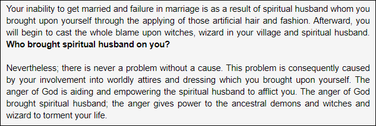
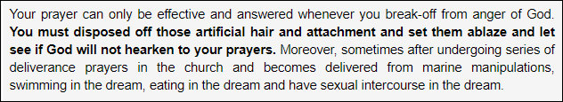
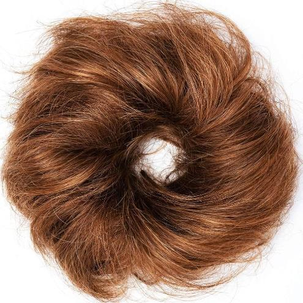

In many Orthodox Jewish communities, it's common to see women wearing head coverings, including scarves, hats, and wigs. Some will wear this covering all the time, while others only wear it when praying or entering a synagogue.
After an Orthodox woman gets married, she covers her hair when she goes outside. When women wear a headscarf or a wig called a “sheitel” in Yiddish, it shows others that they are married and follow traditional customs of behaving.
Rivqah/Rebekah saw Yitschaq/Isaac for the first time, and it inspired a custom in Scripture. She got off the camel and asked the servant, "Who is that man coming towards us. " The servant said, "That is my master [and by implication your bridegroom]." Then she covered herself with a veil [as a bride is wearing to signify that she has kept herself pure for her bridegroom]. (Bereshit/Genesis 24:64) This tradition of covering the hair started in the 15th century and has been followed in Orthodox Judaism ever since.
In the very religious Hassidic communities in Eastern Europe during the 1700s, many women would cut off all their hair after getting married and wear a headscarf called a “tichel” or a wig.
Let’s examine some Scriptures:
Qorintiyim Aleph 11/1 Corinthians the head of a wife is her husband, and the head of Messiah is יהוה. Every man who prays or prophesies with his head covered dishonors his head [Messiah], but every wife who prays or prophesies [in public] with her head uncovered [without her husband] dishonors her head [her husband], since it is the same as if her head were shaven. ... Qorintiyim Aleph /1 Corinthians 11 ESV 15 But if a woman has long hair, it is her glory? For her hair is given to her for a covering. Vayiqra/Leviticus 21 ESV 5 They shall not make bald patches on their heads Yehezkel/Ezekiel 44 ESV 20 They shall not shave their heads Qorintiyim Aleph /1 Corinthians 11 ESV 14 Does not nature itself teach you that if a man wears long hair it is a disgrace for him, but if a woman has long hair, it is her glory? 15 For her hair is given to her for a covering.
However, the various types of orthodoxy slowly changed how they understood the tradition, going from covering the hair completely after the wedding to only covering some of it. Today, religious Jewish women cover their hair with a wig, scarf, bonnet, beret, or hairnet.
The Rabbis who don't like real hair wigs are not being picky for no reason. The main issue is that the hair from India may come from religious ceremonies that worship idols. People who worship a certain god grow their hair as a way to show respect. They promise to cut their hair at the god's temple as a thank-you when their prayers are answered.
Every year, 20 million people go to the Tirupati temple in Andhra Pradesh. Many of them donate their hair. Six hundred barbers work at the temple to shave the pilgrims' hair around the clock. In the "tonsuring" room at the temple, people sit on the floor with their legs crossed. They bend their heads down so the barber can shave their scalp with a razor blade. The helpers pick up the hair and put it in big containers.
The temple sells the hair to wigmakers and makes 5. 6 million dollars. India's hair business is smaller than China's, but the hair from Indian temples is the most expensive in the industry. Indian hair is usually thinner than Chinese hair and it is more like the hair of people from Europe and America. After being made into long hair, Tirupati hair sells for up to $165 for every 2. 2 pounds. Short hair costs $100 for every kilogram. Some strands of hair are bought at a sale and then turned into hair extensions. These extensions are sold to Western women for up to $3,000 for a whole head of hair.
The issue is that the Torah says we can't worship idols or get any kind of benefit from things that are used in idol worship. This sacrifice is only not allowed when it's like the sacrifices done at the Jewish Temple with meat, flour, oil, wine, and water. However, when the object of idolatrous sacrifice (tikrovet avoda zara) used for worship is broken or damaged in honour of the god, it is forbidden to use it in any way. Moreover, the object that was given up as a sacrifice can never be cancelled out, even if it has been changed or mixed with something else.
This means that when an Indian woman gets her haircut and the barber cuts her hair, they are both giving a gift to their god. They are not allowed to use the hair for anything, even if it's mixed with other hair later on. Actually, the ingredient L-Cysteine, made from human hair, would make a food not allowed to eat if the hair is from India. This is because anything offered to idols can never be made okay. This means that any wig made from Indian hair would be not allowed to be worn unless it's certain that none of the hair came from India.
A leading Torah authority, Rabbi Moshe Sternbuch, asserts that there are other problems than just wearing such a wig. Rambam writes that the prohibition against deriving benefit from offerings to idol worship is from the verse, "Nor shall you bring an abhorrence into your house" (Deut. 7:26). Accordingly, he writes, it should be forbidden to keep such a wig in the home even without wearing it. Also, since the actual money received for objects sacrificed in idol worship becomes forbidden, one must be careful not to receive money from one who sells or otherwise works with such wigs. He suggests that one who buys a synthetic wig or other permitted item from a person who profits from such wigs should pay the exact price in cash, or with a check or credit card, in order to avoid receiving change from money that may have been paid for them.
Maran HaGaon Rabbi Elyashiv has also recently prohibited Indian wigs. After sending Rabbi A. D. Dunner from England to India to witness the Tirupati temple ceremony first hand, he ruled as follows: Regarding human hair wigs in Israel, since most are from Indian hair, all are forbidden unless the origin is known. Regarding wigs in other countries, if the majority of wigs are from a permitted source, all wigs are technically permitted, but one must clarify the source of each specific wig. Regarding wigs made from synthetic hair, if they contain human hair as well (which is often the case), they must be treated as other human hair wigs as above. In a case of doubt whether they contain human hair, they are permitted. Rabbi Elyashiv concludes that since objects associated with idol worship are to be burnt in fire, wigs from hair generally known to originate in India (but not specifically from the temple) should be burned, while wigs specifically known to be from the Tirupati temple must be burned.
Avodah Zara [idolatrous sacrifice] and wigs are the BIGGEST SCAM OF THIS GENERATION!
Destroy it! That's the only thing you can do with it. Why? Because each wig labelled as kosher that's being sold has been checked. There are no wigs that are considered kosher. It's not real. This means all wigs come from Avodah Zara, according to statistics. When you have a wig on your head you have a problem.
Phenomenally the Torah forbids benefiting from idolatry in any way, can't wear it, can't make it, can't sell it, can't have any part of it. This is for all Torah Observant believers regardless of culture or Community.
If the wigs are coming from temples that worship idols [99.99% are from temples], then permission was given in the past. This happened before these temples became a big part of the world's wig market.
Bottom line is, if you're wearing a real hair wig, you have a severe problem with יהוה until you destroy it. The kosher certification on wigs is the biggest scam of the generation.
Hair serves a spiritual purpose. Hair is both the vessel for and conduit of spiritual energy, allowing you to open yourself up to divine influences. Why do you believe you are being encouraged to harm your antennas?
That is why shaving your head is forbidden:
Yehezkel/Ezekiel 44 ESV 20 They shall not shave their heads
For many years, and possibly even centuries, the powerful spiritual connection of hair has been kept secret from us. Hair is like a conduit for divine energy and inspiration, acting as high-tension wires transmitting these qualities from the Source, יהוה. The top of our body is the head, and our physical body is considered to be the sacred dwelling place of יהוה, while our hair is seen as our innate royalty. Our hair symbolizes our power and serves as a conduit for spiritual energy to flow through.
Hair enhances the ability to tune in at the most detailed levels or dimensions; the micro within the macro.
Melanin, known for its tremendous ability to absorb various types of energy, undoubtedly has a significant impact on this. Does this imply that hair is naturally drawn to higher energy due to its magnetic properties?
An excerpt from Blacked Out Through Whitewash by SuZar ( Dr. S. Epps )
“Silicon is also a key mineral found in the hair, and undoubtedly contributes to its antenna ability. It is no accident that silicon is also the most essential component of computers; silicon enables computers to have mind-like properties including “memory.” Silicon is also an important mineral found in the brain, which is the seat of the mind”.
Hair can be considered as an extension of the nervous system, functioning as external nerves or advanced feelers that communicate significant information to various parts of the brain.
When you put chemicals in your hair to stress it out, are you damaging the Spiritual connection you have with יהוה?
THE COVENANT BEHIND REAL HAIR PIECES
People unknowingly enter demonic agreements with Satan and the Queen of the Coast when they use real hair wigs.
Evangelist Fumilayo believes that women who appear unable to find husbands or who have experienced failed marriages are to blame for their own misfortune.

How to be free of the Medusa’s curse:

REAL HAIR WIGS & PIECES is a medium Satan is using in sending many Believers' souls to Hellfire.
It is a profound realization that numerous Believers, of both genders, are being influenced by evil forces, leading them towards damnation. Keep in mind that Heaven is a sacred realm where no man-made creations will be allowed. HaSatan is luring many souls to Hellfire through the use of real hair wigs. Numerous women are experiencing various struggles, including issues with marriage, spiritual battles, demonic possession, lustful desires, and other spiritual afflictions too numerous to list.
As said earlier real hair accessories available on the market are sourced from a variety of places including Brazil, Hindu, India, and the marine spiritual realm and are well-known for their occasional ritual sacrifices to their deities before exporting them to various parts of the world.
Natural hair PIECES/ACCESSORIES are created from harvested human hair, so they look, feel and act just like your own hair. Synthetic hair PIECES/ACCESSORIES are created from man-made fibers using specialized technology to give the overall appearance and feel of real hair.

Synthetic hair accessory
Real hair wigs contain a strong demonic energy that is causing conflict for numerous women. You're dealing with multiple issues and have sought help from numerous places without finding any solutions. The answer lies in what you are wearing. If only you will remove it and seek the face of יהוה you will be delivered from any troubles you are currently facing.
My dear sisters, stop wearing them and you will experience freedom. Do not let the devil use this tactic to obstruct your path to walk in יהוה’s Ways and miss your inheritance.
Mattithyahu/Matthew 1030But the very hairs of your head are all numbered.
Scripture teaches that every hair on your head has been counted and is known by יהוה. Remove that demon possession of real hair pieces on your head today and stay natural.
Yeshayahu/Isaiah 316And יהוה says, “Because the daughters of Tsiyon are haughty, and walk with outstretched necks and seductive eyes, walking and mincing as they go, making a jingling with their feet,
17 therefore יהוה shall smite with a scab the crown of the head of the daughters of Tsiyon, and יהוה expose their nakedness.”
18In that day יהוה takes away the finery of the anklets, and the headbands, and the crescents,
19 the pendants, the bracelets and the veils,
20 the headdresses, and the leg ornaments, and the sashes, and the perfume bottles, and the amulets,
21 the rings, and the nose jewels,
22 the costly robes, and the cloaks, and the shawls, and the purses,
23 the mirrors, and the fine linen, and the turbans, and the large veils.
24And it shall be: Instead of a sweet fragrance, a smell of decay; and instead of a belt, a rope; and instead of well-set hair, baldness; and instead of a festal robe, a girding of sackcloth; and branding instead of loveliness.
Kepha Aleph/1 Peter 33Your adornment should not be outward – arranging the hair, wearing gold, or putting on dresses –
4 but the hidden man of the heart, with the incorruptible ornament of a meek and peaceable spirit, which is of great value before Elohim.
5For in this way, in former times, the set-apart women who trusted in Elohim also adorned themselves, being subject to their own husbands